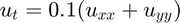
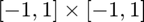
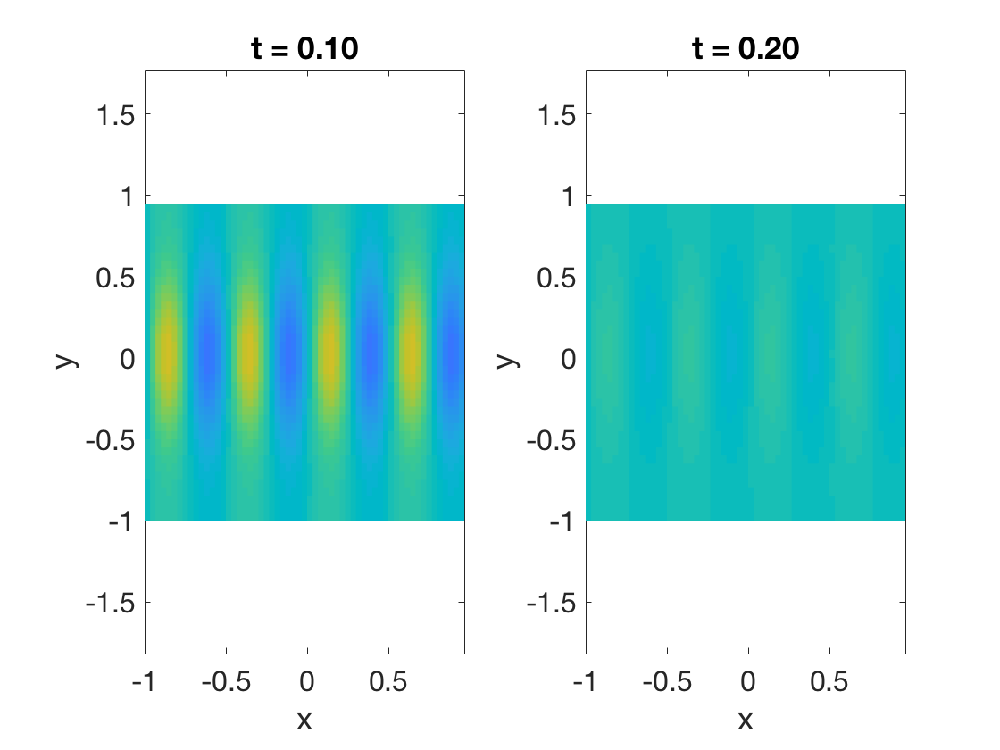

function heat2Dper % ignore this line
We will solve a 2D heat equation  on the square . We'll assume periodic behavior in both directions.
m = 60; n = 40; [x,Dx,Dxx] = diffper(m,[-1,1]); [y,Dy,Dyy] = diffper(n,[-1,1]); [X,Y] = ndgrid(x,y);
Note that the initial condition must also be periodic on the domain.
U0 = sin(4*pi*X).*exp(cos(pi*Y)); pcolor(X,Y,U0) caxis([-1 1]), axis equal, shading flat % ignore this line title('Initial condition') % ignore this line xlabel('x'), ylabel('y') % ignore this line

The next two functions map between the natural matrix shape of the unknowns and the vector shape demanded by the ODE solvers.
function U = unpack(u) U = reshape(u,m,n); end function u = pack(U) u = U(:); end
This function computes the time derivative for the unknowns. The actual calculations take place using the matrix shape.
function dudt = timederiv(t,u) U = unpack(u); Uxx = Dxx*U; Uyy = U*Dyy'; % 2nd partials dUdt = 0.1*(Uxx + Uyy); % PDE dudt = pack(dUdt); end
Since this problem is parabolic, a stiff integrator like ode15s is a good choice.
t = linspace(0,.2,3);
[t,W] = ode15s(@timederiv,t,pack(U0));
W = W.'; % each column is one time instant
Here we plot the solution at two different times. (The results are best viewed using an animation.)
for k = 1:2 subplot(1,2,k) pcolor(X,Y,unpack(W(:,k+1))) axis equal, shading flat % ignore this line caxis([-1 1]) % ignore this line title(sprintf('t = %.2f',t(k+1))) % ignore this line xlabel('x'), ylabel('y') % ignore this line end
end % ignore this line